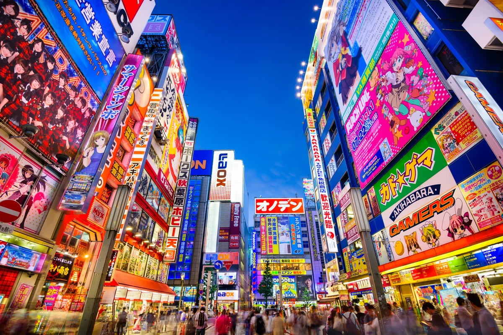
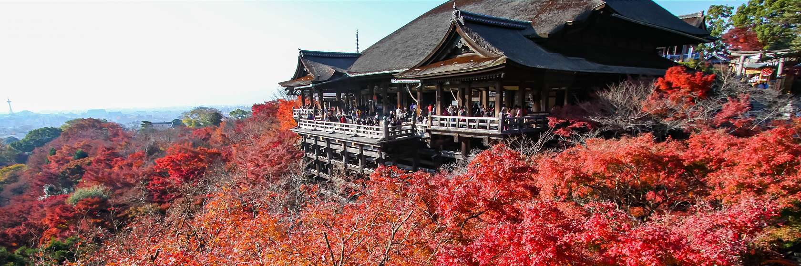

Tokyo
Tokyo is the capital of Japan.
Tokyo is famous for Anime, electronics, manga, and video games. Tokyo have a lot of tourist spots like Shinjuku Gyoen National Garden, Meiji Jingu Shrine, Asakusa. Furthermore, you can also enjoy walking on street of Shibuya, Harajuku and Ginza to see latest trend fashion.
Visit for More Information
KYOTO
There are a lot of Shrines & Temples like Kiyomizu Temple, Kinkakuji, Fushimi Inari-taisya Shrine at Kyoto. In addition, it's also have places which are knowed as Japan Travel Symbol like Arashiyama, Gyon.
KIYOMIZU TEMPLE - A temple which is representative of Kyoto and located in Higashiyama Ward, Kyoto city. The view from main hall which is called "The stage of Shimizu" is magnificent. It also famous place to see Cherry blossoms and autumn leaves.
PONTOCHO - An attractive town with variety of restaurant and souvenir shops.
BAMBOO FOREST - A road through the bamboo forest is typical Arashiyama sightseeing spot. Every winter, it is also illuminated in certain period of every winter.
Visit for More Information
SHIZUOKA
In Shizuoka, you will have change to visit Mt.Fuji - World Cultutural Heritage. In addition, you also can enjoy famous Shizuoka local foods like Sushi, Tempura, Shizuoka tea.
TEA PICKING - Shizuoka is one of most famous areas of the tea production and the view through the big teagarden to Mt.Fuji is one of best view in Japan. Would you like to experience tea picking in Shizuoka? There are various types of Tea in Teagarden and you can experience tea picking from April to October.
SEA FOOD - In Japanese Sardine fry is called "Shirasu". In Suruga Bay, Various types of Shirasu are caught in mix state, and you can enjoy "Kama-age" made from fresh Shirasu and raw Shirasu Sushi. In addition to that Sakura-Ebi (one kind of Shrimp with ping color) is special product of Suruga Bay and a lot of people like Sushi or Tempura made from this kind of Shrimp.
MIHO PINE GROVE - is known as asset of Mt.Fuji which is registered as World cultural heritage in 2013. From Miho no Matsubara 7 km coast with over 30,000 pine trees grow, you can enjoy beautiful view to Mt.Fuji or Izu peninsula across Suruga Bay.
Visit for More Information
OSAKA
Osaka is the secondary biggest metropolitan area in Japan. We have a lot of must-see spots in Osaka; for example, Osaka Castle, Dotonbori, Shinsekai, Umeda , Shinsaibashi, Bay area and so on. Osaka is generally called "Tenka no Daidokoro(天下の台所)", which literally means "Nation's Kitchen". You can enjoy Osaka local foods like Okonomiyaki, Takoyaki and Kushikatsu, too.
OSAKA CASTLE – The most popular and famous landmark in Osaka. You can see beautiful Sakura(Cherry blossom) there in Spring.
DOTONBORI - is gathered with unbelievable number of restaurants and amusement facilities.
SHINSEKAI – Tsutenkaku tower has continued to watch over the City of Osaka for a long time. It's a nostalgic and lively area.
THE UMEDA SKY BUILDING - The 173m tall building consists of two towers that are connected with each other by the "Floating Garden Obserbatory" on the top. The observatory offers great views of the city, especially at night.
Visit for More Information
| Destination | Duration | Price |
|---|---|---|
| TOKYO | 7 Days | $150 |
| KYOTO | 7 Days | $90 |
| SHIZUOKA | 7 Days | $80 |
| OSAKA | 7 Days | $100 |
|  |  | 
|